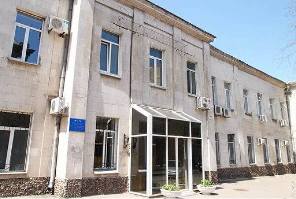

Пришли арабы и начали ее выкачивать.
И вот в то самое время, в 1968 году, в славном городе Одесса, родился я
(Роддом№2, ул. Старопортофранковская 24, 2 этаж, третье окно справа).
- Детский садик
- Школа
- Интерес к радиотехнике
- пионерия
- комсомол
1983-1987 Медицинский институт
1987-1989 Служба в ВС была проведена в виде «увеселительного круиза» по Средиземному морю с заходом в специфические порты:
- Севастополь
- Бенгази
- Триполи
-
Тартус
- Латакия
- Алеппо
- Пальмира
- Дамаск
- Севастополь
1990-1995 Одесский Университет (психология) Применение своих знаний психолога в бизнесе (открытие проектов с «0» - проектный менеджмент).
1995-2018 - Создание сетей магазинов (Украина, Россия, Китай, ФРГ).
2018 по сегодняшний день – Региональный управляющий по Центральному Региону Украины. Одноразовые расходники для медицины
2022 – Используя навыки, полученные ещё в армии, вытаскивал людей из пригородов Бучи
2022 Впервые узнал про HTML – затянуло.
2023 Нашёл Жекины уроки в инете – прошёл все. Но как слепой котёнок без обратной связи.
2023 Воплотил своё хобби в сайт (на базе шаблона) Магия Винтажного Звука